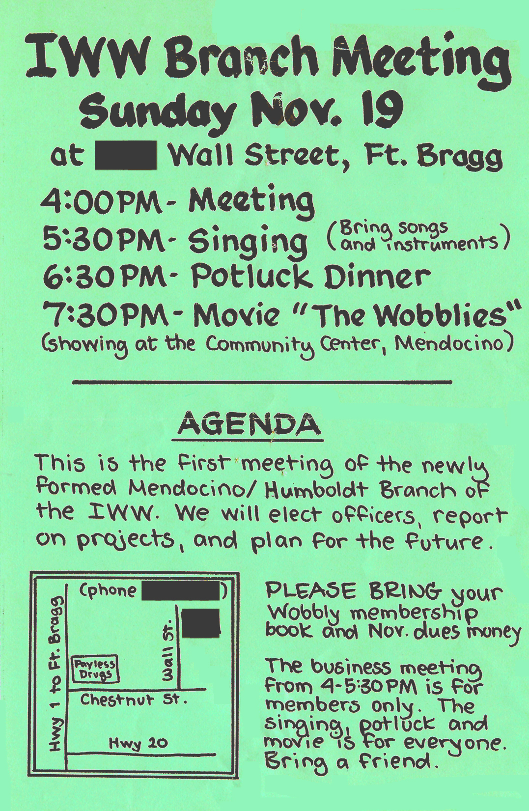

Minutes of the founding meeting of IWW Local #1
Recorded by Judi Bari, x332349, November 19, 1989
The Mendocino-Humboldt General Membership Branch of the IWW held our first meeting on Sunday November 19, 1989. Fourteen (out of 24) members came.
Structure
We set up our basic structure as follows: Judi Bari was elected Corresponding Secretary and Anna Marie Stenberg was elected Financial Secretary. They were instructed to open a bank account and keep track of dues and other paperwork. Other than these utilitarian positions, we will have no officers. Decisions will be made by the members at the meetings. If events occur between meetings that require action, temporary decisions (subject to ratification at the next meeting) will be made by the Entertainment Committee. Membership on the Entertainment Committee is voluntary, and the people who volunteered were Mike Koepf, Treva VandenBosch, Judi Bari, Anna Marie Stenberg, Pete Kayes, and Bob Cooper.
Work So Far
The work of Our Branch was described: We are a General Membership Branch (GMB) and will take on whatever issues the members want, especially issues related to our workplaces. But so far our activities have been centered around providing support for timber workers who are fighting their employers’ destruction of forests, jobs, and working conditions. We hope to be a bridge between environmentalists and timber workers and help bring about community understanding of the workers’ problems.
Pete Kayes, employee of Pacific Lumber Company (PALCO), in Scotia , talked about the failed attempt by workers to form an Employee Stock Ownership Plan (ESOP) and buy the company back from corporate raider Charles Hurwitz. Pete also gave out copies of the rank-and-file newsletter Timberlyin’ that he and others produce and distribute at the Scotia mill.
Treva VandenBosch, recently retired employee of Georgia Pacific (G-P) Corporation in Fort Bragg, told about being doused with PCBs in the G-P mill and receiving no help from the company or union (IWA Local #3-469, AFL-CIO). She walked off the job and single-handedly picketed the plant, eventually hooking up with Anna Marie and Mike (now also IWW members), who helped get the story out. The plant was finally closed for three days for clean-up, and OSHA fined G-P $14,000 for willful exposure of workers to PCB’s. G-P is appealing that decision, and the hearing will be on February 1, 1990 in San Fran-cisco. You must sign up in advance to be allowed to attend the hearing. We are asking all Wobs to sign up, even if you don’t expect to come, to demonstrate public interest. See enclosed forms.
Anna Marie told about Fort Bragg millworker Julie Wiles being arrested and led away in handcuffs for distributing a leaflet calling for fellow IWA Local #3-469 members to vote “no” on a proposed union dues increase. IWA shop stewards distributing pro-dues increase leaflets were not interfered with by the company. The IWA has not provided Julie with any support on her arrest and charges. We are asking all Wobs to come to Julie’s trial, and we have been helping her with her defense. Ten people showed up to support Julie at her arraignment.
Future Projects
IWA Local #3-469 Business Rep. Don Nelson has threatened to cut union services such as help with unemployment and workers comp, because the members voted down his dues increase. We decided that if he does this, the Wobs will provide for free any service he eliminates for G-P millworkers. Mike (Koepf), Treva, Anna Marie, Judi, Page (Prescott), Pete (Kayes), and Darryl (Cherney) volunteered for this project.
We also decided that, sometime after the holidays, our Branch will publish a newspaper by and for timber workers, to be distributed area-wide. Mike volunteered to be coordinator and Pete, Judi, Kay (Rudin) and Darryl volunteered to work on it.
We also decided to work on a sea blockade of Louisiana Pacific (L-P) when they begin shipping northcoast redwoods to Mexico in January.
Miscellaneous
Judi announced that the Michigan Wobs had voted to donate $500 to our organizing drive. We are impressed and appreciative of this show of solidarity. We voted to reimburse Judi and Anna Marie for phone and travel expenses incurred organizing the union so far.
We discussed the question of publicity for our activities, since several newspapers and magazines have already expressed interest in writing about us. We decided there was a danger of the press doing cutesy articles before we even had a chance to do the groundwork for organizing. We decided that we would not give in-depth interviews to the press about our IWW activities until we decide collectively that we are ready.
The business meeting then adjourned, and we song Wobbly and Earth First! songs, accompanied by guitars, fiddles, and banjos. We then went to Mendocino to see the documentary film, “The Wobblies.”
Dues
Union dues are $3 (low income) or $5 (regular). If you did not pay your November dues at the meeting, please see Judi or mail them to the (local IWW branch).
Next Meeting
The next meeting will be Sunday, December 17, 1989 at 4 PM. Bring your red membership book and December dues money. We hope to have more time for singing this time, so bring instruments and songs.
Judi Bari,
Corresponding Secretary